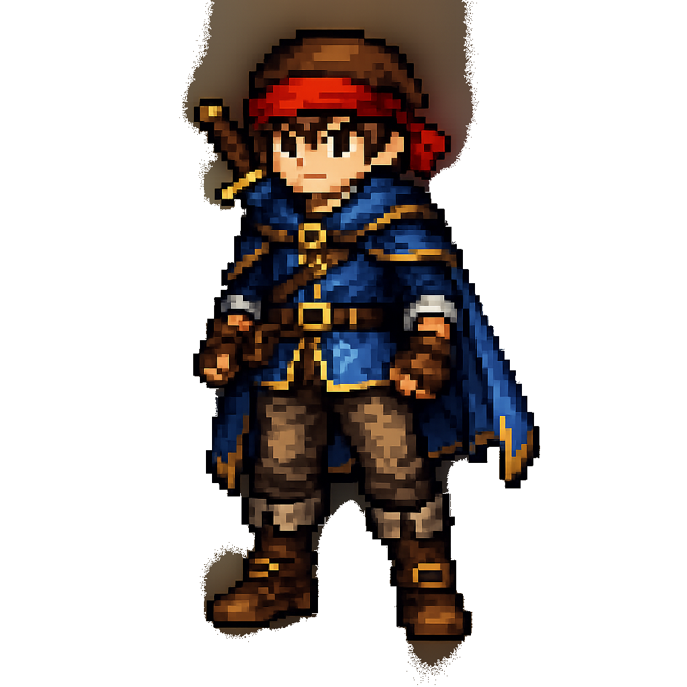

おかえりなさい、山田 太郎 さん
今日も新しいアイデアで冒険に出かけましょう。

★ 週間ランキング ★
今週の獲得EXP＋コイン
- 🥇 鈴Lv.12 鈴木 花子 530EXP480 ◆50
- 🥈 山Lv.7 山田 太郎 （あなた） 405EXP360 ◆45
- 🥉 佐Lv.3 佐藤 大輔 340EXP300 ◆40
下書き
あなただけに表示（公開/投稿するまで非公開）未投票のアイデア
参加クエストで、あなたがまだ投票していないアイデア参加中クエスト
すべて見る →フォロー中のアイデア
動きがあると通知でお知らせ最近の通知
すべての通知 →-
@
鈴木 花子 さんがチャットであなたをメンションしました配送ルート最適化 / アイデア「夜間配送の集約」5分前
-
💬
あなたのアイデアに 3件 の新しいコメント社内ナレッジ検索AI / アイデア「FAQ自動生成」1時間前
-
⭐
あなたのアイデアが 選定 されました（＋200 XP・コイン獲得）社内ナレッジ検索AI昨日